Find the availability bugs that crash-only testing misses.
Most JVM web apps don't fall over with a NullPointerException — they
degrade: a pathological input takes 500ms instead of 5ms, a request leaks a
thread or holds an executor, memory creeps until a GC storm. ClosureJVM runs an app across
thousands of clean iterations and treats availability invariants — latency,
heap retention, thread/executor leaks — as first-class bug oracles, not just crashes.

Why it's different
Fuzzers like Jazzer and JQF are excellent, but their oracle is "did it throw / crash." ClosureJVM's oracle is availability.
Availability is the bug
An iteration is interesting if it exceeds a latency budget, grows the heap, or leaks a thread/executor — not only if it throws.
Cleanliness enforced, not assumed
Each iteration runs inside strict begin/end boundaries; leaked non-daemon threads and un-shut executors are detected and reported with stacks. Contamination becomes obvious.
Works on apps you can't change
A Tomcat valve wraps every request of an unmodified third-party WAR — no code edits, no
repackaging — and one namespace-free jar runs on Tomcat 9 (javax) and 10+
(jakarta).
Signal quality is the one rule
The project has exactly one bar for what ships: a change has to improve
iteration cleanliness, reproducibility, or
signal quality — find real availability pathologies, faster. Crashes are
real crashes: a target declares its expected input rejections via a
CrashClassifier, so a parser throwing on bad input is counted as
rejected, not a crash. Only genuine faults — an unhandled exception, a 5xx — count.
What it found in JPetStore, unmodified
Running inside JPetStore's JVM via the valve, with no changes to the app:
| Signal | Example |
|---|---|
| Latency spike | cold first-catalog request 531ms (budget 20ms) |
| Heap growth | up to 44MB allocated on a single request |
| Per-request cost | steady multi-hundred-KB retention across catalog routes |

What's in the box
Availability invariants
Latency, heap-delta, and thread-delta thresholds, each with hard-fail or soft-signal modes and stack evidence on violation.
Coverage-guided exploration
A JaCoCo agent runs in the target's JVM; the driver reads real coverage over the wire and keeps the inputs that reach new code. Routes and value structure are data — a request grammar, not code.
JVMTI native agent
Event-driven thread lifecycle tracking (ThreadStart/ThreadEnd) — no polling, no
safepoint stack walks — with a ThreadMXBean fallback. One jar, JDK 17 & 21.
Tomcat valve
Wraps every request of an unmodified WAR. A single namespace-free jar runs on both
javax.servlet and jakarta.servlet Tomcat lines.
Decoupled web dashboard
A standalone process — never embedded in a driver. Any number of drivers push status and
findings, keyed by campaign id, for a fleet view with drill-down. JDK
httpserver, binds 127.0.0.1 by default.
Kubernetes demo
One command runs the whole stack in a local kind cluster: the app as a pod with valve + agents baked in, driven from outside. A namespaced injection operator is in progress.
Point it at your app
Run the leak demo, drive embedded Tomcat, or instrument your own WAR in Kubernetes. The getting-started guide has copy-pasteable commands.